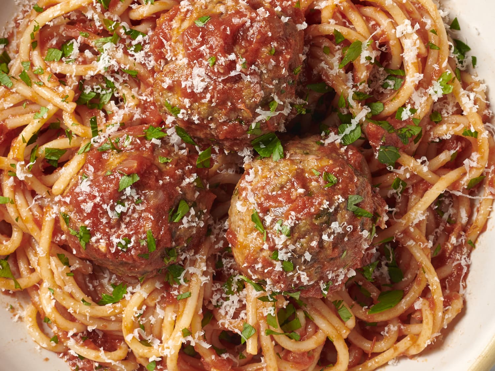

Spaghetti

Description
Slightly overcooked rice spaghetti noodles covered with a spicy tomato sauce topped with mozarella and parmesian cheese with a side of grilled chicken
Ingredients
- One box of rice-based spaghetti noodles
- One 4.5oz can of tomato paste
- 4.5oz of water
- 1 Tbsp of italian seasoning
- 1/4 cup of sugar
- 1 Tsp crushed red pepper
- 1/2 Tsp salt
- 1/2 Tsp pepper
- 1 8oz boneless chicken breast
- 1/2 cup grated mozarella cheese
- 2 Tbsp grated parmesian cheese
Steps
- Boil noodles in 2 gallons of water for 13 minutes.
- Put 4.5oz of tomato paste into small saucepan.
- Mix in 4.5oz of water until tomato paste is thin and smooth.
- Add seasoning, red pepper, salt, pepper and sugar.
- Warm saucepan over low burner.
- Cook chicken on grill or pan.
- Place cooked spaghetti on plate and add heated sauce.
- Add grated mozarella and parmesian cheese.
- Serve with cooked chicken.